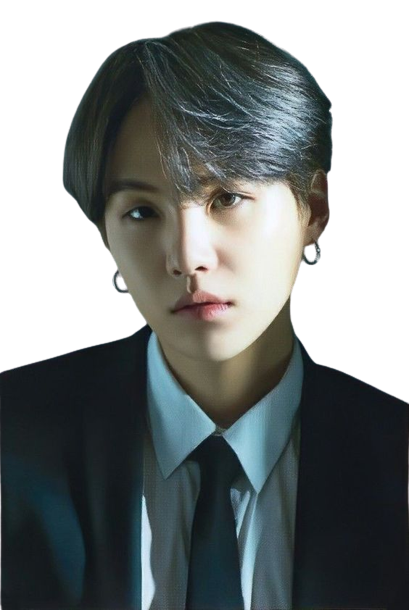
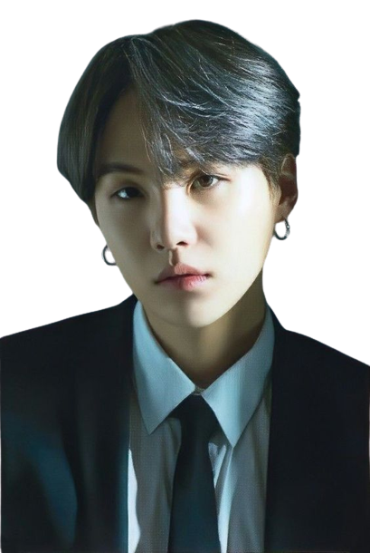
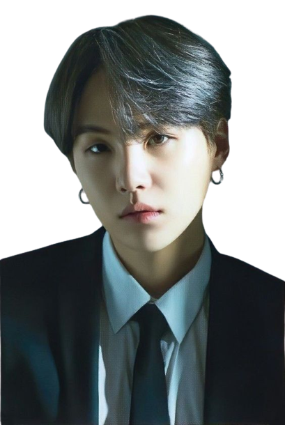
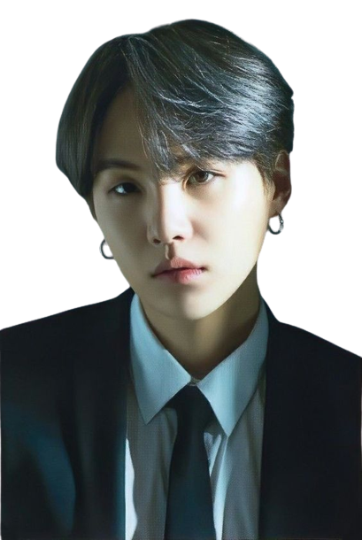

BTS es un grupo surcoreano formado en Seúl en 2010, que debutó el 13 de junio de 2013 bajo la compañía Big Hit Entertainment.Está compuesto por siete integrantes: Jin, Suga, J-Hope, RM, Jimin, V y Jungkook, quienes son los que coescriben y coproducen la mayor parte de su material discográfico. Seis meses antes de debutar, el grupo empezó a ganar atención tanto por su presencia en redes sociales como por sus covers. Su canal de Youtube, BANGTANTV, y su blog se crearon el 16 y 21 de diciembre de 2012, respectivamente.
En Youtube, BTS también subió vídeos con otro tipo de contenido, como vlogs, análisis de equipo musical o prácticas de canto y baile. BTS publicó su primer álbum sencillo, 2 Cool 4 Skool, el 12 de junio de 2013, como la primera entrega de su serie «trilogía de la escuela». A pesar de que llegó a alcanzar el número 5 en Corea del Sur, el disco vendió solamente 24,441 copias en 2013. El grupo Bangtan Sonyeondan cobro vida en la industria del entretenimiento con su debut oficial. La canción elegida fue “No more dream”, un tema que formó parte de su primer disco y que marcó el inicio de su exitosa carrera en Asia y el mundo entero. En 2 Cool 4 Skool, BTS empleó un sonido old-school hip-hop junto con una imagen agresiva, y sus letras reflejaron principalmente los prejuicios hacia ellos, así como una crítica a la sociedad que subestima sus sueños, y su ansiedad y determinación ante el futuro. Leer más
Este un sitio ideal para conocer más acerca de BTS. Nuestro sitio se preocupa por tener lo último en noticias de cada integrante. Si eres baby army, este es el mejor lugar.
Si tienes algun comentario acerca de esta Fanpage...
aidealvarezgarcia01@gmail.com
BTS & ARMY | @Create Octubre 2022